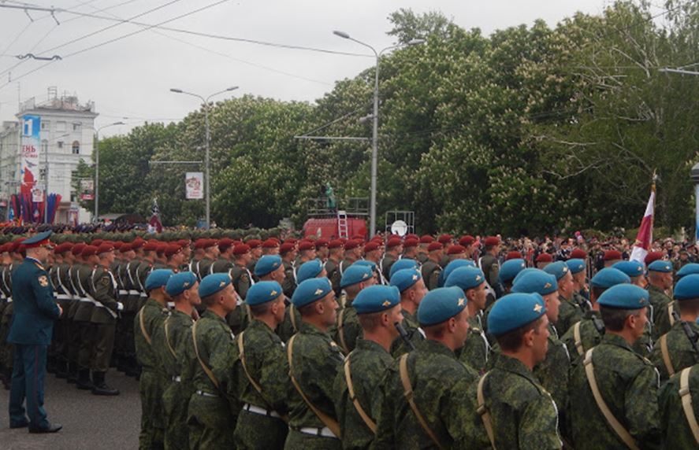
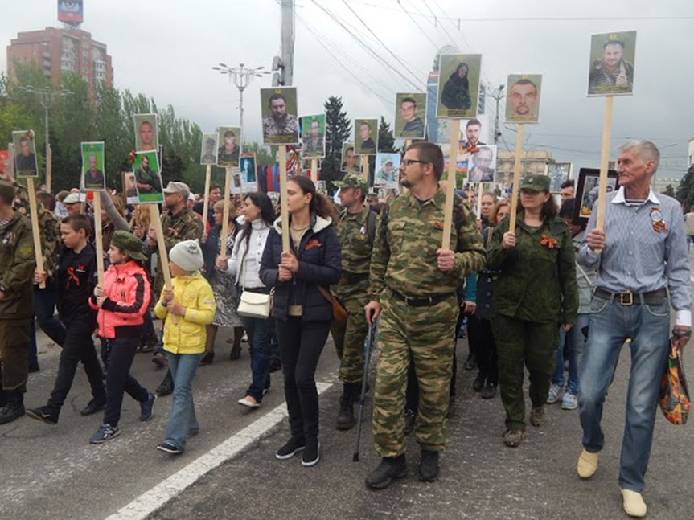
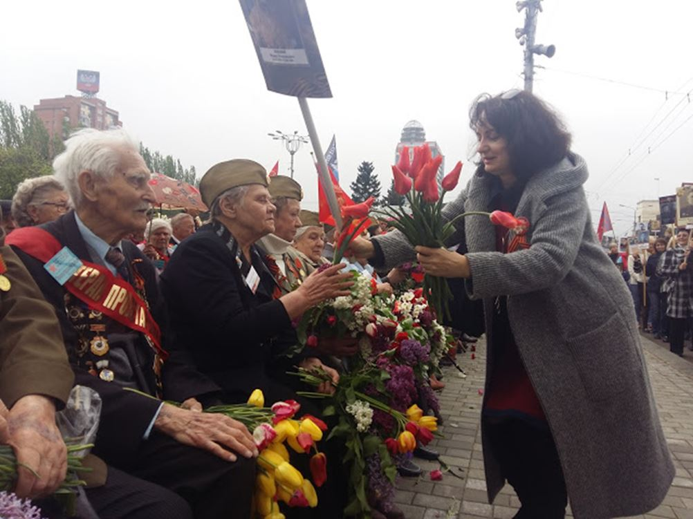
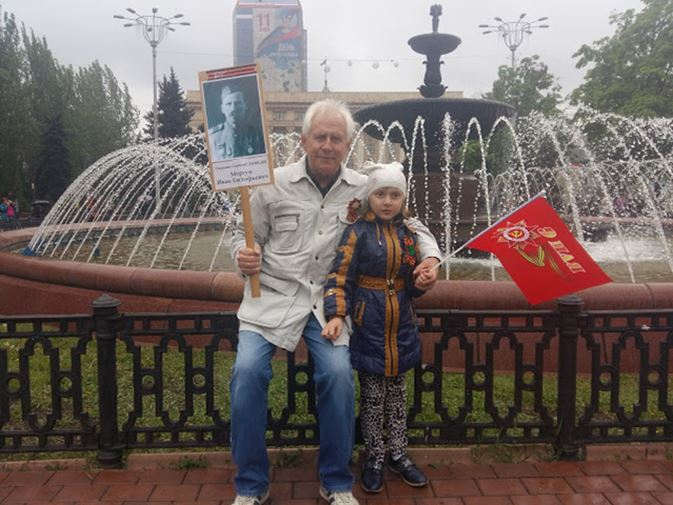

Le Président Zakharchenko dans le régiment immortel portant le portrait de Motorola
Le 8 mai 2017, les bombardements et accrochages ont repris sur la ligne de front au Nord de Donetsk, dans le secteur de Spartak et Volvo Center. Echanges de tirs aux armes d'infanterie, mitrailleuses et canons de bord de véhicules blindés jusqu'à des tirs d'artillerie et d'obusiers…
Pendant ce temps-là les femmes et les hommes libres du Donbass se souviennent de cette Histoire douloureuse qui aujourd'hui frappe encore aux portes de leurs cités...
« Ils sont en vie aussi longtemps que nous nous en souvenons ! »
Ce matin je me suis rendu place Lénine pour assister à la grande parade clôturant les commémorations du Jour de la Victoire…
- 8h45, sous un ciel couleur acier, les soldats de la jeune République s'alignent devant la tribune officielle drapée aux couleurs sable, azur et pourpre de la DNR…
La foule est déjà nombreuse, massée le long de l'avenue Artem, arborant les rubans de Saint Georges et les portraits des aïeux, héros de la Grande Guerre patriotique. ..
Des groupes de vétérans finissent d'arriver vers la place d'honneur qui leur est réservée aux côtés de la tribune présidentielle. Ces femmes et ses hommes avancent timidement à petits pas sous les applaudissements, alourdis par le poids des années, des médailles et des souvenirs…
- 9h00, après l'arrivée des officiels, la parade militaire se déroule selon une chorégraphie toute moscovite à la semblance de sa sœur aînée qui se déroule au même instant à l'ombre des remparts du Kremlin…
Revue et présentation des troupes, défilé des troupes à pied puis défilé des véhicules (ouvert par un authentique T34 et des « orgues de Staline » de la guerre !) vont s'enchaîner pendant 25 minutes dans une métrique chronométrée impeccable ou chacun mesure les progrès exceptionnels réalisés en 3 ans depuis les levées anarchiques des premières milices populaires d'autodéfense jusqu'à ce « corpus abarone » (corps de défense) professionnel entraîné discipliné.
- 9h30, tandis que s'éloignent vers le Nord de l'avenue Artem les unités militaires, le silence qui envahit la place Lénine, ne dure qu'un très court moment, car venant du Sud une rumeur monte à son tour vers le centre-ville attirant les regards et les larmes : le régiment immortel entre dans la place au rythme invincible du pas légion !
A ce moment-là je prends pleinement conscience de la dimension spirituelle de l'événement et de ce centre-ville devenu le temps de cette cérémonie un sanctuaire sacré bâti par une communion totale de la foule avec son Histoire…
Ce régiment immortel semble aujourd'hui être devenu infini, tant la foule compacte n'en finit pas de s'écouler dans les avenues de cette place accueillie par des « hourra », applaudissements et « spassiba » chargés d'émotion et de respect immenses…
Je n'avais jamais vu cela auparavant, et sans mentir, ce sont plusieurs dizaines de milliers de personnes (30 000 diront les observateurs) qui sont venus portant de leur amour des dizaines de milliers de portraits de combattants de l'armée victorieuse qui fut surtout rouge par le sang versé pour notre liberté !
Les porteurs de mémoire défilent devant les vétérans qui retrouvent leurs compagnons d'armes disparus entre les gerbes de fleurs déposées dans leurs mains tremblantes par des enfants qui n'ont pas oublié le prix de la Liberté !
Comme la veille à Saur Moghila, le ciel pleure à son tour quelques larmes qui viennent allumer les médailles, les fleurs et les regards de ce peuple héroïque et humble à la fois, et pour lequel mon admiration est devenue amour.
Ce peuple du Donbass, dans une foule compacte comme un seul homme a fait du centre-ville de Donetsk un grand livre d'Histoire ouvert et vivant dont les pages glorieuses vont être lues pendant plus de 2 heures dans ces portraits noir et blanc et jaunis par le temps mais dont les regards sont restés intacts et nous regardent reprendre le flambeau de leur existence…
- 11h00, le rideau des commémorations se referme doucement sur cette place centrale au sol pavé de fleurs. Ici et là des groupes se retrouvent à l'ombre de statues et des fontaines, voulant prolonger ce moment sacré encore et toujours, les photos des héros toujours serrées contre les poitrines palpitantes…
Donetsk, comme Lugansk, mais aussi Karkhov et jusqu'à Odessa n'en déplaise aux propagandistes kiéviens et occidentaux, sont des terres russes, car elles ont été nourries du sang des soldats russes tombés pour leur défense et leur liberté…
Aujourd'hui mieux que dans le secret silencieux des isoloirs électoraux, le peuple du Donbass, dans les rues de la cité libre de Donetsk, a ouvert au monde son cœur pour affirmer haut et fort son identité et sa destinée volontaires…
Cette parade du 9 mai n'est pas seulement la commémoration du jour de la victoire de 1945, elle célèbre aussi toutes les victoires du présent et surtout celles du futur, qui libéreront bientôt les territoires russes encore occupés et martyrisés par le totalitarisme kiévien...
Le Donbass n'est pas seulement fort d'une armée de 30 000 hommes, il est fort de millions de personnes qui dans le passé comme le présent forgent dans sa mémoire collective depuis des générations une identité particulière, éternelle et invincible…
Aujourd'hui Donetsk a montré que son ancien nom de « Stalino » (acier) était toujours vivant dans les cœurs de ses citoyens...
Partager cette page